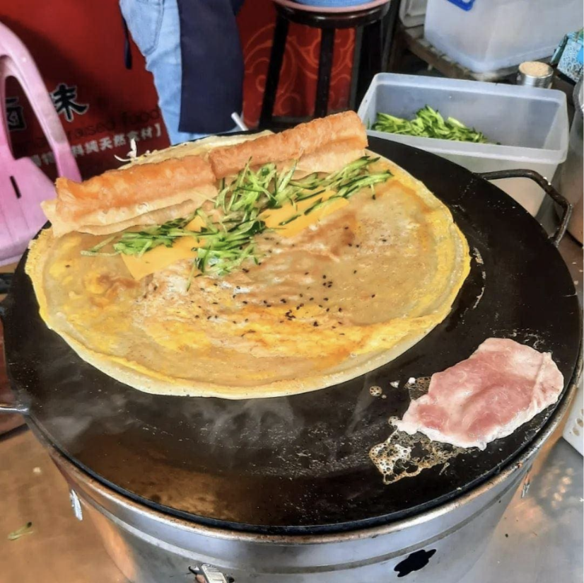
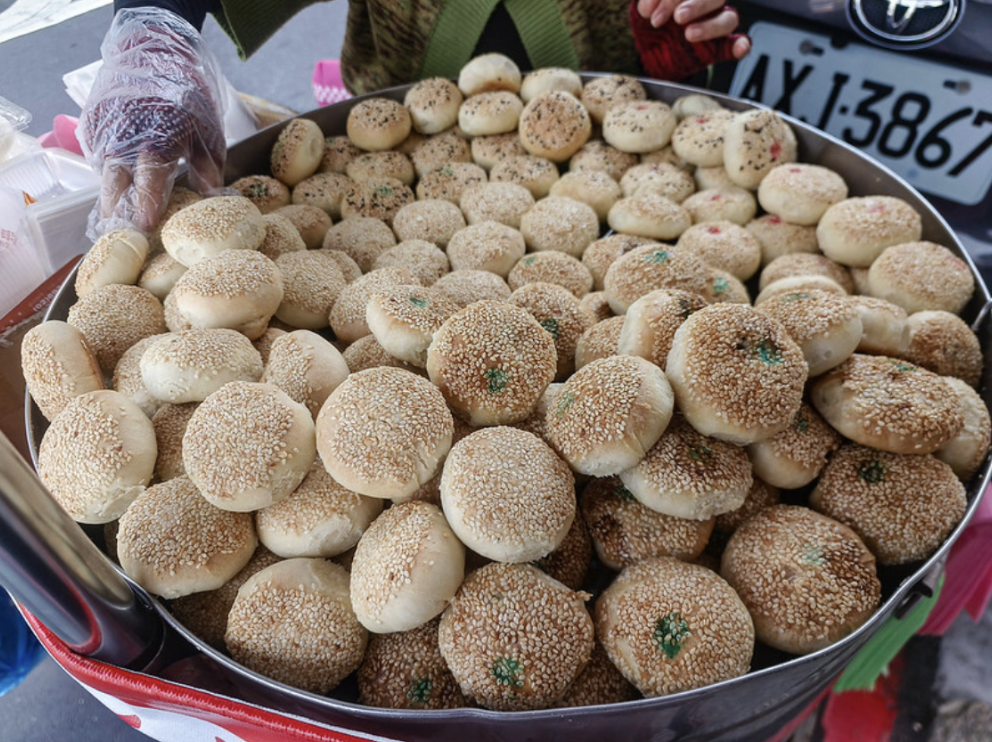

Afternoon Snack
4 pm, Street Foods at Huang He Road (黄河路, huang he lu)


My favorite activity when travelling is just to wander around a random street and see what I come across. And Shanghai was the perfect city to do this because the streets are lined with an infinite amount of small shops and food stalls. Each booth was run by an experienced owner who had dedicated their entire lives to perfecting their one signature dish, and this was a great way to try a little bit of every small snack Shanghai has to offer.
The first food item that caught my eye was a Chinese savory crepe (煎饼果子, jian bing guo zi). I saw the cook cracking fresh eggs, pouring batter, and adding filling right in front of me. I think it was a super cool experience to see my food cooked quickly and efficiently right before my eyes. And the result was a piping hot and fresh street snack that could be readily enjoyed. I think that the crepe was so convenient and delicious, and something I would definitely want to eat every single day. Just seeing the food made on the spot was such a stand out experience, and an easy, accessible, and cheap experience I believe everyone should try out.
The next food that stood out to me were crab shell pastries (蟹壳黄, xie ke huang). These consisted of a flaky outer pastry shell, and a variety of flavorful fillings. I tried the sesame, red bean, pork, and shredded radish fillings. Each pastry was warm and delicious and super super flavorful, it was like an explosion of flavors in my mouth.